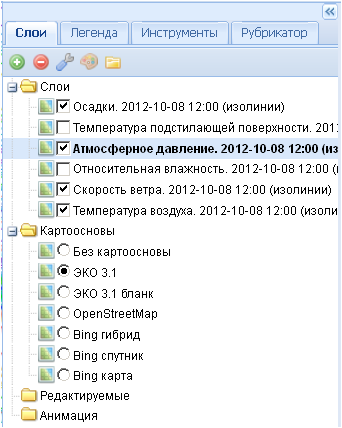

Папка слои
При первоначальном запуске приложения папка Слои является пустой.
После загрузки и добавления необходимых пользователю слоев (см. Слой-Добавить), а также при повторном запуске проекта на боковой панели задач появится список загруженных слоев.

Отображение слоев в рабочем окне карты регулируется снятием или постановкой галочки напротив названия нужного слоя, активация слоев осуществляется нажатием левой кнопкой мыши на названии слоя (при этом шрифт поменяется с обычного на жирный).
Порядок отображения слоев в рабочем окне соответствует их положению в списке слоев на боковой панели задач – сначала отображаются слои из нижней части списка, затем - из верхней. Если слои вверху списка являются поверхностями, то они будут перекрывать слои из нижней части списка. Чтобы поменять порядок отображения слоев, нужно перетащить перекрытый слой выше по списку с помощью нажатой левой кнопки мыши.

При наведении курсора на название слоя оно подсвечивается серым цветом, и появляется окошко с краткой характеристикой каждого слоя (метаданные), которое через 15 секунд исчезает.
Если нажать правой кнопкой мыши на названии любого слоя, раскроется дополнительное окошко контекстного меню.